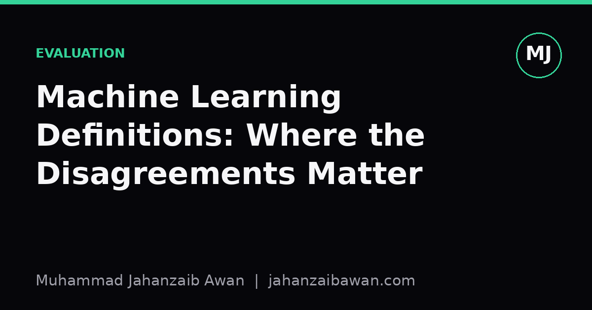

Machine Learning Definitions: Where the Disagreements Matter
Every textbook defines machine learning slightly differently. Most of the differences are harmless, but a few quietly change what counts as evidence that a model works.

Why bother comparing definitions
Open three machine learning textbooks and you will find three slightly different definitions of the field. One leans on Tom Mitchell's formulation: a program learns from experience E with respect to tasks T and performance measure P if its performance on T, measured by P, improves with E. Another leans on statistical learning theory and defines learning as estimating a function from a hypothesis space that minimises expected risk over an unknown data distribution. A third keeps things informal and just says machine learning is about algorithms that improve automatically through data.
It is tempting to treat this as pedantry, the kind of thing that matters only to people writing the opening chapter of a book and nobody else. For the most part that is true. Whether you call the thing being learned a function, a hypothesis, or a model does not change how you write training code. But a handful of these disagreements are not cosmetic. They encode different assumptions about what counts as valid evidence that learning has actually happened, and those assumptions show up directly in how people design evaluation.
The point of this post is not to pick a winner. It is to separate the differences that are genuinely just vocabulary from the one or two that quietly determine whether a reported accuracy number means anything.
The disagreement that does not matter much: experience versus data distribution
Mitchell's definition talks about experience, which sounds active and procedural, almost like the system is doing something. The statistical learning formulation talks about a data distribution and i.i.d. samples drawn from it, which sounds passive and mathematical. In practice these describe the same thing from two angles. Experience is just a looser word for the training sample; the distribution is the formal object that sample is assumed to come from. Nobody building an actual model agonises over which framing to use before fitting a classifier.
Similarly, the dispute between calling the output a function, a hypothesis, or a model is almost entirely terminological. A decision tree is a function from feature vectors to labels, a hypothesis in the formal sense, and a model in everyday usage, all at once. Switching between these words when reading different books costs you nothing beyond a moment of translation. These are the disagreements that make definitions feel inconsistent across sources without actually producing inconsistent practice, and they are not worth spending energy on.

The disagreement that does matter: what counts as improvement on T
Here is the one that bites. Mitchell's definition says performance on task T, measured by P, should improve with experience E. It does not say improve on what data. A surprising number of informal treatments quietly let P be measured on the same data E was drawn from, because that is the easiest thing to compute. A model's training accuracy going up is, strictly, an instance of performance improving with experience. But it is not evidence of learning in any useful sense, because a sufficiently flexible function can memorise training data without capturing any pattern that transfers.
The statistical learning framing forces the issue by explicitly distinguishing empirical risk, measured on the training sample, from expected risk, measured over the full distribution the data came from. Under that framing, a definition of learning that only checks improvement on the training set is not learning at all, it is curve fitting with extra steps. This sounds like a fine philosophical point until you watch it play out numerically.
Take a concrete case. Suppose you train a model to predict loan default on five thousand historical applications, and training accuracy climbs from 70 percent to 97 percent as you add more features and increase model capacity. Under the loose, training-data reading of Mitchell's definition, this is unambiguous learning: performance on the task has improved with experience, full stop. Under the statistical learning reading, this number tells you almost nothing on its own. What matters is accuracy on a held-out set of applications the model never saw during fitting. If that held-out accuracy sits at 71 percent while training accuracy sits at 97 percent, the honest conclusion is that the model has overfit, memorising quirks of the five thousand training rows rather than learning a generalisable signal. The two readings of the same definition produce opposite verdicts about the same number.
This is not an abstract worry. It is the exact failure mode that leakage-aware evaluation exists to prevent. If your test set shares duplicated rows with your training set, or if a feature encodes information that would not be available at prediction time, you can produce a model whose test accuracy looks like genuine learning under either definition, while in fact it is memorisation wearing a disguise. The definitional dispute about where P should be measured is really a dispute about whether your evaluation protocol is trustworthy, and that is not a matter of taste.
What to actually take from this
When you read a definition of machine learning that says a system improves with experience, mentally append the clause on unseen data drawn from the same distribution it was trained on. That clause is doing almost all of the useful work, and plenty of informal definitions leave it implicit or drop it entirely. The textbooks that are careful about distinguishing empirical risk from expected risk are not being needlessly formal, they are encoding the single methodological commitment that separates a useful performance number from a misleading one.
In practice this means treating any reported accuracy, F1 score, or RMSE with a simple question before anything else: was this measured on data the model could not have seen, directly or indirectly, during training or feature construction? If the answer is no, or unclear, the number is not evidence of learning under any definition worth taking seriously, regardless of which textbook's wording you prefer. Everything else in the definitional debate, the choice between function and hypothesis, the choice of phrasing around experience, is genuinely safe to ignore. This one is not.